Solo es una forma de represetarlo, ya que será algo que tendrá que establecer mediante las adecuadas reglas de estilo.
Veamos en detalle el tipo de información que abarca cada una estas etiquetas. En la parte superior de la página se sitúa la cabecera, en la que habitualmente se ofrecen datos básicos de la empresa, la marca o el propio sitio web, por lo que suele estar formada por un logo y su nombre. Esta información se incluye en la etiqueta (header) que, por su naturaleza, suele ser la misma en todas las páginas del sito.
En la etiqueta (nav) se encuentra la barra de navegación desde la que se accede a las principales partes del sitio web. Está formada por una serie de enlaces o menús donde no suele faltar una opción que lleve a una página en la que se ofrezca una breve descripción de la empresa, la marca o el sitio, un catálogo de productos o servicios y los datos de contacto. Aunque en la imagen anterior se sitúe debajo de la cabecera, cada vez con más frecuencia forma parte de esta.
El contenido principal debe ir dentro de la etiqueta (main) y constituye la información por la que un usuario accede a la página. Se suele organizar por secciones o artículos que tratan de temas específicos e independientes de los demás. Para crear una sección se utiliza la etiqueta (section), mientras que los artículos se construyen con (article).
El contenido de la etiqueta (aside) abarca todo el que está relacionado con el principal, por lo que varía mucho en función de la naturaleza de la página. Se trata de información secundaria que suele estar compuesta de enlaces a artículos relacionados, a otros sitios web, los últimos post publicados (agrupados por categorías o etiquetas), anuncios, etc.
Por último, la etiqueta (footer) suele incluir de nuevo el logo de la empresa (igual que en la cabecera), así como los datos de contacto y enlaces a la política de privacidad o legal, a los términos de uso del producto o servicio ofrecido, a las redes sociales, etc.
En resumen, la estructura jerárquica de una página web que sigue este diseño es la siguiente:

La jerarquía solo muestra la relación de pertenencia entre elementos, no la posición que ocupan en pantalla ni entre ellos.
Debajo de cada etiqueta irían los elementos HTML que contienen, que pueden ser elementos primitivos u otros contenedores. En este último caso, la jerarquía iría creciendo hacia abajo.
Por ejemplo, en la cabecera es habitual que haya una imagen o un logo al lado del texto que identifique el sitio web, en la barra de navegación una lista de enlaces que permita navegar por las principales páginas de dicho sitio, etc.
En la jerarquía anterior (estructura en árbol), esto se traduce en ramificaciones hacia abajo, como la presentada en esta otra imagen, donde se ha desarrollado la parte correspondiente a la cabecera:
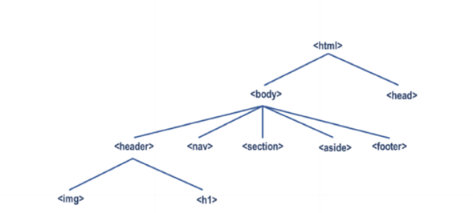Ahora la jerarquía consta de tres niveles: el de la página HTML, el del contenido visible y el de la cabecera. Con el resto de secciones se haría lo mismo y, seguramente, eso traería consigo nuevos niveles.
Es importante conocer la posición de cada elemento en la jerarquía, ya que estos heredarán muchas de las características visuales de sus ancestros, las cuales pasarán, a su vez, a la descendencia.
Es importante conocer la posición de cada elemento en la jerarquía, ya que estos heredarán muchas de las características visuales de sus ancestros, las cuales pasarán, a su vez, a la descendencia.
A modo de ejemplo, se muestra una de las páginas del sitio web de Mozilla (utilizado como referencia en este libro) que sigue el diseño descrito.
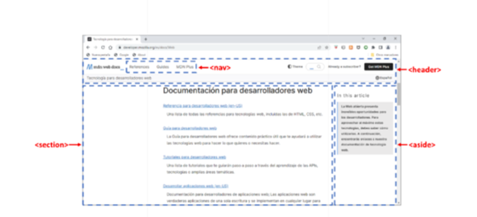Observe como se funde la barra de navegación y la cabecera en la parte superior. Haciendo scroll hacia abajo, verá la información del pie de página.
Para finalizar esta sección, desarrollará un documento HTML que sigue el diseño estándar. Se trata de una página cuyo objetivo es dar a conocer los principales lugares de interés de Roma.
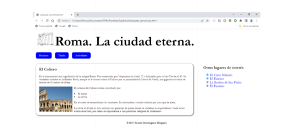El código HTML de dicha página es el siguiente:
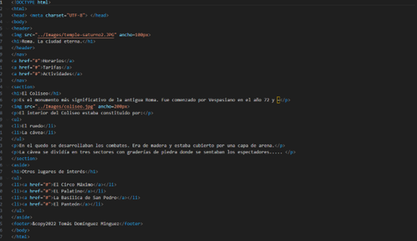El cuerpo del documento HTML está formado por las etiquetas semánticas descritas en esta sección: (header), (nav), (section), (aside) y (footer). Analicemos por separado el código de cada una de ellas.
Como el contenido principal de la página solo se compone de una sección, por simplicidad se ha omitido la etiqueta (main).
La cabecera del documento está formada por una imagen cuyo ancho se ha limitado a 100 píxeles y un encabezado (h1):
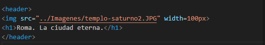La barra de navegación está formada por tres hipervínculos que informarían de los horarios, tarifas y actividades de cada lugar de interés:
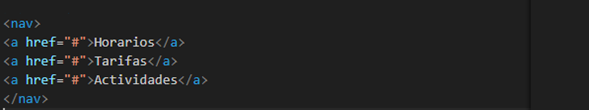El contenido principal se compone de un encabezado (h1), una serie de párrafos que describen el Coliseo, una lista con sus partes estructurales y una imagen representativa de 200 píxeles de ancho:
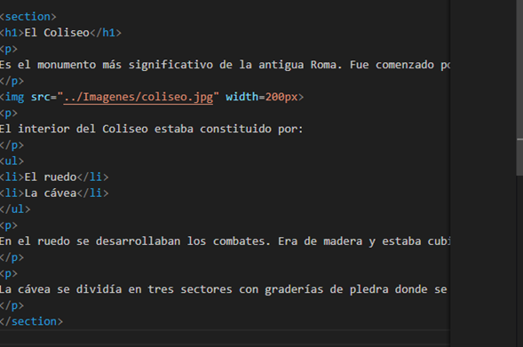Los puntos suspensivos representan el texto que se ha omitido para no hacer innecesariamente largo el código.
El contenido relacionado vuelve a tener un encabezado (h1) y una lista de hipervínculos a otros lugares de interés:
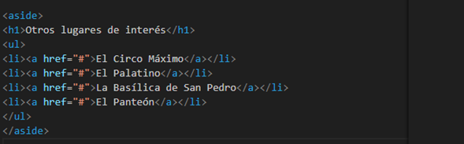Por último, el pie de página solo muestra el nombre del autor:

Aunque el código HTML esté completo y se hayan usado las etiquetas semánticas adecuadas, la página no tendrá el mismo aspecto que la imagen anterior, sino el siguiente:
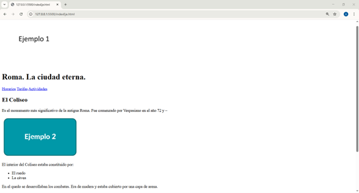Salta a la vista que el contenido de cada etiqueta se sitúa debajo de la anterior (excepto los hipervínculos, que se muestran en línea). El motivo es porque las etiquetas semánticas solo se encargan de agruparlo por secciones según su temática, pero no intervienen en la forma de mostrarlo, responsabilidad de las hojas de estilo. En un capítulo posterior, una vez adquiridos los conocimientos necesarios, desarrollará la que permita darle la apariencia deseada. 2.4.6.2 Contenedores genéricos Las etiquetas estudiadas anteriormente eran contenedores semánticos porque su información solo podía ser de un tipo específico. Sin embargo, hay otros motivos para agrupar un conjunto de elementos HTML:
• Organizarlos físicamente en la pantalla, asignándoles un determinado espacio y posición.
• Crear un estilo visual homogéneo mediante una paleta de colores, una familia de fuentes, etc.
• La temática de su contenido no se ajusta a ninguno de los contenedores semánticos estudiados anteriormente.
La etiqueta que permite utilizar este tipo de contenedor genérico es (div). Aunque sus usos son muy variados, se empleará generalmente para aglutinar aquellos elementos que compartan las reglas de estilo que establezcan su apariencia o posición en la página según un determinado diseño gráfico.
Con el fin de entender la función de este tipo de contenedores, va a realizar una serie de ejercicios en los que se recurre a ellos para cambiar de forma conjunta el aspecto de un grupo de párrafos. Aunque sea objeto de estudio del siguiente capítulo, para entender estos ejercicios debe saber que una de las formas de cambiar la apariencia de cualquier elemento HTML es asignar ciertos valores a una serie de características visuales (propiedades) mediante el atributo style de la siguiente forma:
Style=”propiedad: valor; propiedad: valor; …”
Así, por ejemplo, las propiedades que se van a manejar en los ejemplos de esta sección son:
• font-family. Establece el tipo de fuente del texto. En los códigos de ejemplo se utilizará cursive (no la confunda con el estilo de letra cursiva o itálica estudiada en una sección anterior, cuyo nombre procede de esta fuente), arial y fantasy.
• color y background-color. Determina el color de tinta y el de fondo.
Ahora, escriba el siguiente código en el que no hay ningún contenedor:
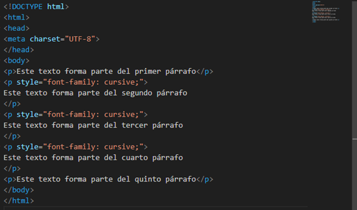Dicho código muestra el texto del primer y último párrafo con la fuente por defecto (no se ha especificado ningún estilo), mientras los tres centrales aparecen en cursive, tal como puede ver a continuación:
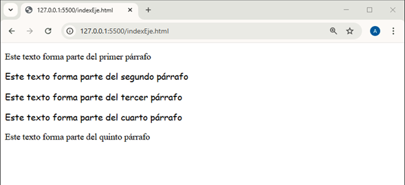Este ejemplo es muy sencillo y está formado solo por cinco párrafos, pero una página web real puede tener muchos. Imagine que quiere que todo el texto se muestre en cursiva. Tendría que repetir dicho estilo en todos y cada uno de los párrafos. La labor se complica aún más si el estilo está compuesto de múltiples propiedades (por ejemplo, además de la fuente, el color y el tamaño de los caracteres, etc.) o si dichos párrafos se reparten en secciones con sus propios estilos. A todo esto, hay que sumar el hecho de que, si en un futuro quisiera cambiar el aspecto de la página, tendría que rehacer el estilo en todas las etiquetas. Eso supondría un enorme trabajo que dificultaría el mantenimiento del sitio web.
Para simplificar esta tarea, lo que se hace es agrupar los elementos en contenedores. De esa forma, solo sería necesario definir el estilo una sola vez en el contenedor (div), ya que los elementos contenidos los heredarían.
El siguiente código agrupa los dos párrafos centrales del ejercicio anterior en un contenedor donde se define su estilo (en vez de en los propios párrafos):
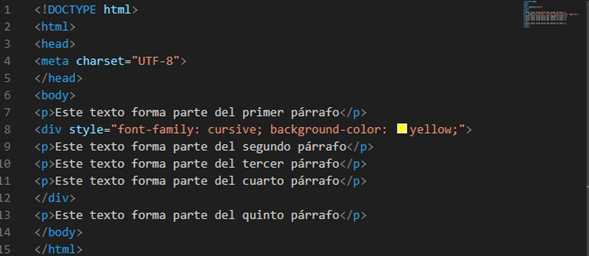Aparte del tipo de fuente (propiedad font-family), al contenedor (div) se le ha añadido la propiedad background-color para delimitar el espacio que ocupa. Así, se puede identificar claramente los párrafos que incluye.
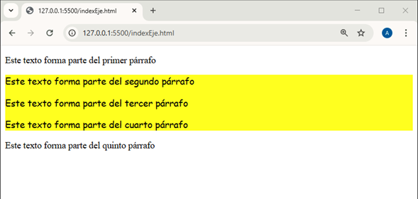El código anterior puede verse de forma esquemática en la siguiente imagen.
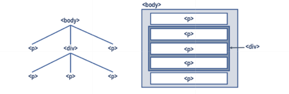A la derecha se muestran los cinco párrafos tal como aparecen en la pantalla del navegador (simbolizada por la etiqueta (body)), donde se aprecia que los tres párrafos centrales están dentro de un contenedor (div).
A la izquierda, estos mismos elementos se representan de forma jerárquica. En la parte superior se encuentra el cuerpo del documento, debajo del que están los dos párrafos y el contenedor. A su vez, este último está formado por otros tres párrafos situados en un segundo nivel de la jerarquía.
Según dicha jerarquía, si en la etiqueta (body) se hubiera especificado un estilo, este sería heredado por los elementos hijos, es decir, los situados en el nivel inferior (en ese caso, los dos párrafos y el contenedor). Asimismo, los dos párrafos del contenedor (div) (situados en un segundo nivel) heredarían el estilo de dicho contenedor, que podría ser el heredado de la etiqueta (body) o el establecido en la propia etiqueta (div).
Puesto que todos los elementos HTML pueden fijar su propio estilo y heredar el de los ancestros, ¿qué sucedería si estos entraran en contradicción? Por ejemplo, si en el cuerpo del documento se indicara que la fuente debe ser cursive, y en el contenedor o en el párrafo fuera arial. En ese caso, la regla es que siempre prevalece el estilo definido en el elemento más específico, es decir, el que está situado más abajo en la jerarquía.
El siguiente código de ejemplo muestra cómo se aplica un estilo a un conjunto de párrafos cuando este se establece en el cuerpo del documento, en un contenedor o en la propia etiqueta del párrafo:
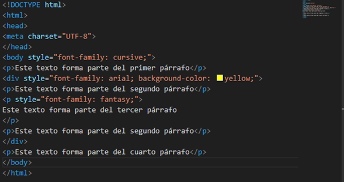Al haber establecido un estilo de fuente cursive en el cuerpo del documento (etiqueta body>), por defecto todos los párrafos de la página se escribirían con dicha fuente. Sin embargo, eso solo sucede con el primero y el último, ya que los tres intermedios están dentro de un contenedor div> en el que se ha especificado su propia fuente (arial). No obstante, solo se escriben con esta el primer y el tercer párrafo, ya que en la etiqueta del segundo se fija una tercera fuente (fantasy).
La siguiente imagen muestra el resultado obtenido:
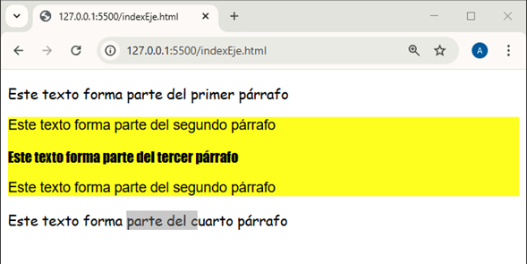El mecanismo de herencia es aplicable a cualquier tipo de contenedor (incluso los semánticos). En cualquier caso, debe saber que no todas las propiedades se heredan.